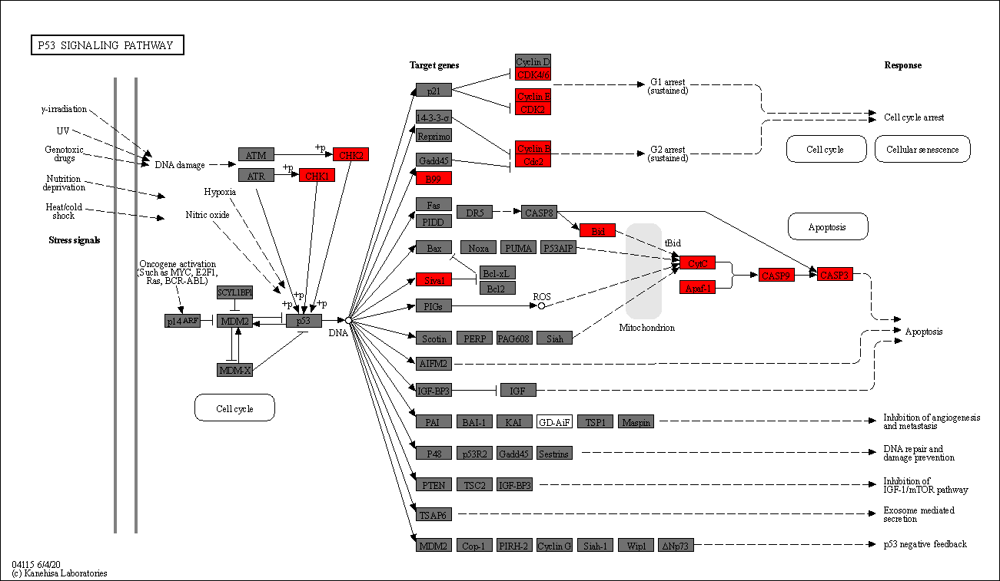

Visuailzing multiple enrichment analysis results#
Utilizing GSEApy, we present an example of visualizing the outcomes of multiple enrichment analyses. Here, we employ a dataset from a study that examined transcriptomic alterations induced by BK polyomavirus infection in renal tubular epithelial cells (Assetta et al. 2019).
[1]:
import gseapy
[2]:
import os
import pickle as pkl
from pydeseq2.dds import DeseqDataSet
from pydeseq2.ds import DeseqStats
from pydeseq2.utils import load_example_data
import warnings
warnings.filterwarnings('ignore')
[3]:
import pandas as pd
count_df = pd.read_csv("PRJNA560236_count.txt", sep="\t").T
count_df.head()
[3]:
| A1BG | A1BG-AS1 | A1CF | A2M | A2M-AS1 | A2ML1 | A2MP1 | A3GALT2 | A4GALT | A4GNT | ... | ZWILCH | ZWINT | ZXDA | ZXDB | ZXDC | ZYG11A | ZYG11B | ZYX | ZZEF1 | ZZZ3 | |
|---|---|---|---|---|---|---|---|---|---|---|---|---|---|---|---|---|---|---|---|---|---|
| SRR9967595 | 20 | 81 | 1 | 0 | 22 | 0 | 0 | 0 | 669 | 0 | ... | 1055 | 1034 | 295 | 363 | 1053 | 96 | 2297 | 2381 | 1801 | 2806 |
| SRR9967596 | 27 | 80 | 1 | 1 | 14 | 0 | 0 | 0 | 504 | 0 | ... | 901 | 1023 | 299 | 293 | 868 | 80 | 1998 | 2238 | 1521 | 2481 |
| SRR9967597 | 15 | 82 | 0 | 3 | 18 | 0 | 0 | 0 | 513 | 0 | ... | 1307 | 1564 | 257 | 409 | 1040 | 84 | 2527 | 1895 | 1939 | 2901 |
| SRR9967598 | 9 | 44 | 1 | 1 | 7 | 1 | 0 | 0 | 488 | 0 | ... | 978 | 1779 | 66 | 123 | 612 | 108 | 1072 | 858 | 1228 | 1927 |
| SRR9967599 | 23 | 77 | 0 | 2 | 10 | 0 | 0 | 3 | 721 | 1 | ... | 1650 | 2778 | 135 | 183 | 855 | 121 | 1769 | 1016 | 1484 | 2843 |
5 rows × 29744 columns
[4]:
clinical_df = pd.read_csv("SraRunTable_PRJNA560236.txt", sep=",")
clinical_df.index = clinical_df.Run
clinical_df.index.name = None
candidate = clinical_df[clinical_df["time_point"]=="at 6 days post infection"].index
candidate = list(set(candidate) & set(count_df.index))
clinical_df.head()
[4]:
| Run | Assay Type | AvgSpotLen | BioProject | BioSample | cell_source | Cell_type | Center Name | Consent | DATASTORE filetype | ... | MBytes | Organism | Platform | ReleaseDate | sample_acc | Sample Name | source_name | SRA Study | time_point | treatment | |
|---|---|---|---|---|---|---|---|---|---|---|---|---|---|---|---|---|---|---|---|---|---|
| SRR9967595 | SRR9967595 | RNA-Seq | 100 | PRJNA560236 | SAMN12572476 | 13 months old female | Primary Human Renal Epithelial Cells (ATCC) | GEO | public | fastq,sra | ... | 2404 | Homo sapiens | ILLUMINA | 2019-08-15T00:00:00Z | SRS5268041 | GSM4034946 | BK infected cells at 3 days post infection | SRP218354 | at 3 days post infection | BK polyomavirus (BKPyV) |
| SRR9967596 | SRR9967596 | RNA-Seq | 100 | PRJNA560236 | SAMN12572509 | 13 months old female | Primary Human Renal Epithelial Cells (ATCC) | GEO | public | fastq,sra | ... | 1997 | Homo sapiens | ILLUMINA | 2019-08-15T00:00:00Z | SRS5268042 | GSM4034947 | BK infected cells at 3 days post infection | SRP218354 | at 3 days post infection | BK polyomavirus (BKPyV) |
| SRR9967597 | SRR9967597 | RNA-Seq | 100 | PRJNA560236 | SAMN12572508 | 13 months old female | Primary Human Renal Epithelial Cells (ATCC) | GEO | public | fastq,sra | ... | 2375 | Homo sapiens | ILLUMINA | 2019-08-15T00:00:00Z | SRS5268043 | GSM4034948 | BK infected cells at 3 days post infection | SRP218354 | at 3 days post infection | BK polyomavirus (BKPyV) |
| SRR9967598 | SRR9967598 | RNA-Seq | 100 | PRJNA560236 | SAMN12572507 | 13 months old female | Primary Human Renal Epithelial Cells (ATCC) | GEO | public | fastq,sra | ... | 1921 | Homo sapiens | ILLUMINA | 2019-08-15T00:00:00Z | SRS5268044 | GSM4034949 | BK infected cells at 6 days post infection | SRP218354 | at 6 days post infection | BK polyomavirus (BKPyV) |
| SRR9967599 | SRR9967599 | RNA-Seq | 100 | PRJNA560236 | SAMN12572506 | 13 months old female | Primary Human Renal Epithelial Cells (ATCC) | GEO | public | fastq,sra | ... | 2676 | Homo sapiens | ILLUMINA | 2019-08-15T00:00:00Z | SRS5268045 | GSM4034950 | BK infected cells at 6 days post infection | SRP218354 | at 6 days post infection | BK polyomavirus (BKPyV) |
5 rows × 29 columns
[5]:
dds = DeseqDataSet(
counts=count_df.loc[candidate,:],
clinical=clinical_df.loc[candidate,:],
design_factors="treatment",
refit_cooks=True,
n_cpus=8,
)
[6]:
dds.fit_size_factors()
dds.fit_genewise_dispersions()
dds.fit_dispersion_trend()
dds.fit_dispersion_prior()
dds.fit_MAP_dispersions()
dds.fit_LFC()
Fitting size factors...
... done in 0.02 seconds.
Fitting dispersions...
... done in 10.25 seconds.
Fitting dispersion trend curve...
... done in 11.86 seconds.
Fitting MAP dispersions...
... done in 10.26 seconds.
Fitting LFCs...
... done in 3.59 seconds.
[7]:
dds.calculate_cooks()
if dds.refit_cooks:
# Replace outlier counts
dds.refit()
Refitting 0 outliers.
[8]:
stat_res = DeseqStats(dds, alpha=0.05,contrast=["treatment","BK polyomavirus (BKPyV)","none (uninfected)"])
stat_res.run_wald_test()
if stat_res.cooks_filter:
stat_res._cooks_filtering()
stat_res.p_values
if stat_res.independent_filter:
stat_res._independent_filtering()
else:
stat_res._p_value_adjustment()
stat_res.summary()
Running Wald tests...
... done in 4.53 seconds.
Log2 fold change & Wald test p-value: treatment BK polyomavirus (BKPyV) vs none (uninfected)
| baseMean | log2FoldChange | lfcSE | stat | pvalue | padj | |
|---|---|---|---|---|---|---|
| A1BG | 15.356750 | 0.019922 | 0.380606 | 0.052344 | 9.582549e-01 | 0.974228 |
| A1BG-AS1 | 79.427946 | -0.747451 | 0.292659 | -2.554004 | 1.064922e-02 | 0.032686 |
| A1CF | 0.685369 | -1.268784 | 1.636031 | -0.775526 | 4.380292e-01 | NaN |
| A2M | 0.968656 | 0.189368 | 1.209550 | 0.156561 | 8.755908e-01 | NaN |
| A2M-AS1 | 12.146683 | -1.006216 | 0.439510 | -2.289404 | 2.205589e-02 | 0.059017 |
| ... | ... | ... | ... | ... | ... | ... |
| ZYG11A | 84.048757 | 1.337741 | 0.262999 | 5.086480 | 3.647705e-07 | 0.000004 |
| ZYG11B | 1863.055526 | -0.436978 | 0.184829 | -2.364225 | 1.806783e-02 | 0.050254 |
| ZYX | 1102.044658 | -0.545409 | 0.301693 | -1.807829 | 7.063307e-02 | 0.147662 |
| ZZEF1 | 1504.948093 | -0.016638 | 0.169712 | -0.098035 | 9.219047e-01 | 0.951360 |
| ZZZ3 | 2551.864972 | 0.034200 | 0.137628 | 0.248499 | 8.037484e-01 | 0.872939 |
29744 rows × 6 columns
[9]:
stat_res_summary = stat_res.results_df
[10]:
sig_genes_up = list(stat_res_summary[(stat_res_summary.padj<0.05) & (stat_res_summary.log2FoldChange>0)].index)
sig_genes_down = list(stat_res_summary[(stat_res_summary.padj<0.05) & (stat_res_summary.log2FoldChange<0)].index)
[11]:
enr_res_up = gseapy.enrichr(gene_list=sig_genes_up,
organism='Human',
gene_sets='KEGG_2021_Human',
cutoff = 0.05)
enr_res_down = gseapy.enrichr(gene_list=sig_genes_down,
organism='Human',
gene_sets='KEGG_2021_Human',
cutoff = 0.05)
[12]:
gseapy.barplot(enr_res_up.res2d)
[12]:
<Axes: xlabel='$- \\log_{10}$ (Adjusted P-value)'>

[13]:
import requests_cache
import pykegg
from PIL import Image
## Cache all the downloaded files
requests_cache.install_cache('pykegg_cache')
## Single result
Image.fromarray(pykegg.visualize_gseapy(enr_res_up,
colors=["#ff0000"],
pathway_name="p53 signaling pathway"))
[13]:

[15]:
## Multiple results
Image.fromarray(pykegg.visualize_gseapy([enr_res_up, enr_res_down],
colors=["#ff0000", "#0000ff"],
pathway_name="p53 signaling pathway"))
[15]: